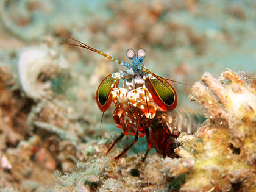
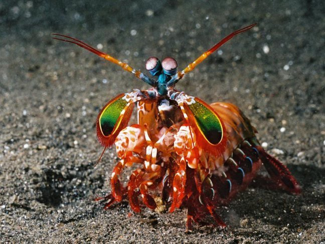

Fatos sobre o Stomatopoda
O camarão-louva-a-deus-palhaço (Odontodactylus scyllarus), também conhecido como lagosta-boxeadora é uma espécie de tamarutaca nativa do Indo-Pacífico, de Guam até a África Oriental.
| Reino | Filo | SubFilo | Classe | Subclasse | Ordem | Animalia | Arthropoda | Crustaceos | Malacostraca | Hoplocarida | Stomatopoda |
|---|
Chamam atenção
Em aquários de água salgada, é uma atração tanto pela coloração quanto pelo perigo .
Pequenos e esmagadores
São capazes de desferir um dos mais rápidos e violentos golpes do reino animal, seu soco fora registrado com uma velocidade de 80 km/h e aceleração similar a uma arma calibre .22.
Odontodactylus Scyllarus em ação